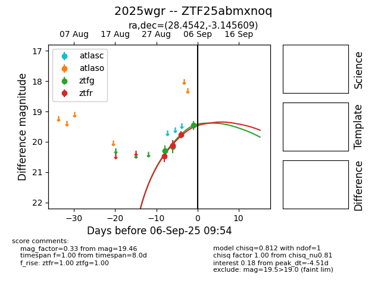

FINK: ZTF25abmxnoq
Lasair: ZTF25abmxnoq
ALeRCE: ZTF25abmxnoq
TNS: 2025wgr
YSE: 2025wgr
ZTF25abmxnoq (ztf,fink)
2025wgr (tns,yse)
equatorial (ra, dec) = (28.4542,-3.14561)
galactic (l, b) = (157.4912,-61.75777)

last ztfg=19.86, ztfr=19.59
5 ztfg, 5 ztfr detections